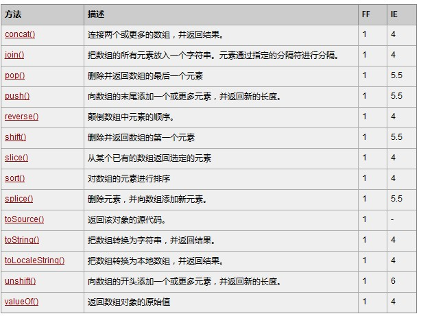
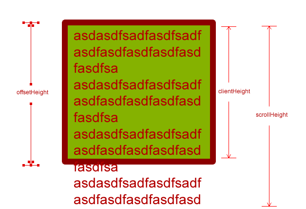
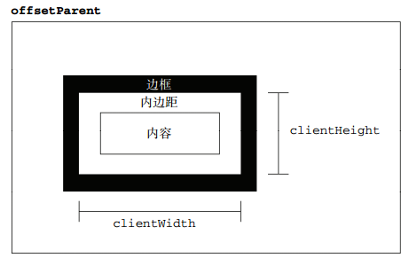

DOM操作
增 删 改 查 (下面有详细介绍)
增
//document.createElement
//innerHTML
//cloneNode
//appendChild
//insertBefore
删
//innerHTML
改
//innerText
//setAttibute
//style
查
//document.getElementById
//document.getElementsByTagName
//document.getElemnetsByClassName
异常处理
异常的最大特征就是，会报错，后面的代码将不会继续执行
语法异常 语法错误导致的异常
浏览器差异导致的异常
运行时异常
异常处理语句
try{
//可能会出错的代码
//1.打开了资源
//2.操作资源
}catch (e){
//e 就是异常信息
//出现异常后的处理代码
}finally{
//不管怎么样，有没有异常出现，都会执行的代码
//3.释放资源
}
手动抛出异常
//语法： throw anything
//catch(e) 这里的e 就会是你throw的这个东西
try{
throw {
errMsg:”您的代码出错了！”,
errCode:-1
};
}catch (e){
console.log(e);
}
DOM基本概念
DOM
DOM Document Object Model 文档对象模型
就是把HTML文档模型化，当作对象来处理
DOM提供的一系列属性和方法可以视作一个工具箱，极大地方便了我们对文档的处理。
内容概念
文档(Document)：就是指HTML或者XML文件
节点(Node)：HTML文档中的所有内容都可以称之为节点，常见的节点有
元素节点 属性节点 文本节点 注释节点
元素(Element)：HTML文档中的标签可以称为元素
结构概念
父节点 当前节点的父级
子节点 当前节点的子级
兄弟节点 和当前节点同属一个父级的节点
获取元素
getElementById
通过id寻找一个元素（找到的是一个元素对象）
该方法只能被document对象调用（同一个文档中id不能重复）
getElementsByTagName
通过标签名寻找一类元素（找到的是由元素对象组成的伪数组）
即可以被document调用，又可以被元素对象调用，被元素对象调用时表示在该元素对象内部执行查找
设置属性
元素对象.属性名 = “属性值”;
等价于
\<标签 属性名=”属性值”>
绑定事件
事件三要素
事件源.事件 = function(){ 事件处理程序 };
等价于
\<标签 事件=”事件处理程序”>
对象方法中的this永远指的是该方法所属的那个对象
常用属性
常用标签属性
DOM对象的属性和HTML的标签属性几乎是一致的，常用的有src、title、className、href和style
其中className对应就是标签的class属性，但是由于class在JS中是关键字，所以变成了className
内部文本属性
innerHTML
获取和设置标签中的内容，设置的内容会当作节点对象被解析到DOM树上
innerText
获取和设置标签中的内容，设置的内容会被当作普通文本（有兼容性问题，旧版ff不支持）
textContent
获取和设置标签中的内容，设置的内容会被当作普通文本（有兼容性问题，旧版IE不支持）
可以通过能力检测封装一个自己的设置内部文本的方法并放到自己的JS工具包中
常用表单属性
常见的表单元素属性有： type、value、checked、selected、disabled
type可以设置input元素的类型
value可以设置input元素的值
checked可以设置input元素是否选中
selected 可以设置下拉列表select中的option是否被选中
disabled 可以设置input元素是否被禁用
文本框获取焦点和失去焦点
获取焦点事件是onfocus 失去焦点事件是onblur (不是所有的标签都有这个事件)
更多详细内容可以查阅w3School
自定义属性
对象的自定义属性
可以像给对象设置属性一样，给元素对象设置属性
标签的自定义属性
可以通过getAttribute()和setAttribute()设置和获取标签属性，通过removeAttribute()移除标签的属性
正常浏览器中 HTML中有规定的属性 两种方式才可以相互设置和获取
总之用setAttribute设置的就用getAttribute获取
用对象的自定义属性设置的就用对象的自定义属性获取 以免出问题
节点
节点类型
node.nodeType
1表示元素节点 2表示属性节点 3表示文本节点 8注释
节点层次
所有获取节点相关属性都没有兼容性问题
childNodes //子节点
children //子元素 虽然不是早期DOM标准中的方法，但是所有浏览器都支持
nextSibling //下一个兄弟节点
nextElementSibling //下一个兄弟元素 有兼容性问题
previousSibling//上一个兄弟节点
previousElementSibling //上一个兄弟元素 有兼容性问题
firstChild //第一个节点
firstElementChild //第一个子元素 有兼容性问题
lastChild //最后一个子节点
lastElementChild //最后一个子元素 有兼容性问题
parentNode //父节点 （一定是元素节点，所以无需处理）
样式属性
style属性是对象，style对象的属性是字符串
style只能获取和设置行内样式
DOM对象中style的属性和标签中style内的值几乎一样
只是带有 -
的属性名较为特殊（如background-color变成了backgroundColor），因为在JS中 -
不能作为标识符
设置和获取样式
//通过对象的style属性只能设置和获取行内样式
//获取样式的时候 如果行内没有该样式 输出空字符串
//设置样式的时候 赋的值是一个字符串 如果这个属性有单位 一定要节点加单位
什么情况通过class控制样式 什么情况通过style控制样式
不严格的说：
//如果样式很多 通过 直接控制类名 的方式加样式
//如果样式比较少 通过直接设置比较方便
严格来说：
//从标准的角度讲 即使是样式比较少的时候 设置样式也要用类名
//但是有一类情况 是无论如何也必须直接通过JS加的 那就是涉及到计算的时候
动态创建元素
插入和移除节点
克隆节点
要克隆的节点.cloneNode(布尔值);
在父元素中的最后追加子元素
father.appendChild(要追加的节点对象);
在父元素中的某个子元素前面插入子元素
father.insertBefore(要插入的节点对象,插到这个节点对象的前面);
从父元素中移除子元素
father.removeChild(要移除的子节点对象);
清空父元素
father.innerHTML=””;在清空内容的时候和事件相关的函数不会被销毁，任然遗留在内存中
因此如果方便的话，建议使用father.removeChild(son)来清除
动态创建结构
方式一：直接在文档中书写
document.write(“内容”)
方式二：改变元素对象内部的HTML
innerHTML=”内容”
方式三：创建或克隆节点并追加
createElement()
cloneNode()
通过这两种方法创建出来的元素只是保存在内存中，必须放到页面上才行!
内置方法
字符方法
charAt() //获取指定位置处字符
charCodeAt() //获取指定位置处字符的ASCII码
str[0] //ES5，IE8+支持 和charAt()等效
操作方法
concat() //拼接字符串，和+一样
slice() //从start位置开始，截取到end位置，end取不到
substring() //从start位置开始，截取到end位置，end取不到
substr() //从start位置开始，截取length个字符
trim() //只能去除字符串前后的空白
split() //把字符串切割成字符数组
位置方法
indexOf() //返回指定内容在元字符串中的位置, 在数组中的话,返回的是索引
lastIndexOf() //从后往前找，只找第一个匹配的
匹配方法
search()
replace()
大小写转换方法
to(Locale)UpperCase() //转换大写
to(Locale)LowerCase() //转换小写
数组方法

图形属性 offset系列
offsetWidth和offsetHeight
用来得到对象的大小
\@offsetHeight和style.height的区别
demo.style.height只能获取行内样式，如果样式写到了其他地方，甚至根本就没写，便无法获取
style.height是字符串（而且带单位），offsetHeight是数值
demo.style.height可以设置行内样式，offsetHeight是只读属性
因此，一般用demo.offsetHeight来获取某元素的真实宽度/高度，用style.height来设置宽度/高度
\@offsetHeight的构成
offsetHeight = height+padding+border
包括 自身高度 内边距 边框 不包括 外边距

offsetParent
\@offsetParent爸爸去哪
返回该对象距离最近的带有定位的父级
如果当前元素的所有父级元素都没有定位（position为absolute或relative），offsetParent为body
如果当前元素的父级元素中有定位（position为absolute或relative），offsetParent取最近的那个父级元素
另外注意offsetParent与parentNode的区别parentNode只找自己的上一级（亲爹）
offsetLeft和offsetTop
用来得到对象的位置（注意：没有offsetRight和offsetBottom）
\@offsetLeft的构成
到距离自身最近的（带有定位的）父元素的 左侧/顶部 的距离
如果所有父级都没有定位则以body 为准
offsetLeft 是自身border左侧到父级padding左侧的距离


\@offsetLeft和style.left的区别
一、style.left只能获取行内样式
二、offsetLeft只读，style.left可读可写
三、offsetLeft是数值，style.left是字符串并且有单位px
四、如果没有加定位，style.left获取的数值可能是无效的
五、最大区别在于offsetLeft以border左上角为基准，style.left以margin左上角为基准
在行内设置以下属性，并且记得加定位
left:20px; margin:20px;

不用死记，offset是计算偏移的，只要记住和定位有关就行了，实在需要详细区分，用的时候自己写个div试一试或者一查文档就知道了。
Math对象
\@Math对象常用方法
天花板 向上取整 负数取更大的
Math.ceil(x)
地板 向下取整 负数取更小的
Math.floor(x)
就近取整
rounds a number to the nearest integer 就近取整 有的地方就翻译成四舍五入了
//四舍五入 只看尾数的最高位 01234舍 56789入
//就近取整 会整体比较 以.5为界限 小于的舍 大于的入 等于的 正数入负数舍
//虽然原则不一样但是实际上差别不大 只有一种情况会产生分歧 就是-1.5
//四舍五入是-2 而就近取整-1
Math.round(x)
取绝对值
Math.abs(x)
动画原理
动画原理公式
动画原理公式： leader = leader + step
leader表示盒子当前位置
step表示步长
box.style.left = box.offsetLeft + 10 + “px”;
让setInterval不断执行某个函数修改盒子的位置属性最后就实现了动画的效果
动画函数封装
\@动画函数封装
动画函数较为复杂，却又很常用对于这样的函数，我们一般都会进行封装
需求：能够让任意对象移动到指定位置。
动画函数改进
\@动画函数改进
然而封装之后的函数还有很多问题，所以我们要对其进行进一步改进
判断运动方向
完善终点检测
终点清除定时器
手动设置对象位置到终点
调用开始先清理定时器，防止多次调用
图形属性scroll系列
scroll系列
\@scrollHeight和scrollWidth
对象内部实际内容的高度/宽度
\@scrollTop和scrollLeft
被卷去部分的 顶部/左侧 到可视区域 顶部/左侧 的距离

页面滚动座标
\@获取页面滚动座标
页面滚动座标非常常用，但是有很大的兼容性问题，可以合写为
var scrollTop = window.pageYOffset || document.documentElement.scrollTop ||
document.body.scrollTop || 0;
\@封装自己的scroll()
由于非常常用，每次都写上面那一大堆很麻烦。我们可以封装一个自己的scroll()方法，返回页面滚动座标
固定导航案例
\@固定导航案例
当页面向下滚动的时候 进行判断 如果页面向上走的距离 大于导航栏到页面顶部的距离时
将导航栏的定位改为固定定位
小问题：当导航栏改为固定定位的一瞬间，后面的元素会塌陷。解决方案：给下面的元素添加数值为导航栏高度的padding-top
缓动动画
原理公式
动画公式
leader = leader + step
匀速动画公式
step = 定值
leader = leader + step
缓动动画公式
step = ( target - leader ) / 10
leader = leader + step
缓动动画的好处
他的移动是有尽头的。不像基础匀速运动那样无限移动。
有非常逼真的缓动效果，实现的动画效果更细腻。
如果不清除定时器，物体永远跟着目标leader在移动。
\@体验缓动动画
函数封装
\@缓动动画改进
多次点击按钮重复开启定时器
永远无法真正到达目标
到达目标后清理定时器
\@缓动函数封装
需求：能够让任意对象移动到指定位置
封装缓动框架
详细见html代码
图形属性client系列
client系列
\@clientWidth和clientHeight：
偏移offsetWidth: width + padding + border
卷曲scrollWidth: width + padding 不包含border 内部内容的大小
可视clientWidth: width + padding 不包含border

\@clientTop和clientLeft
clientTop和clientLeft没什么用
他们就是borderTop和borderLeft（如果有滚动条会包含滚动条的宽度，但谁见过滚动条在顶部或者左侧的？！）

网页可视区宽高
\@网页可视区宽高的兼容写法
页面可视区宽高非常常用，但是有很大的兼容性问题，可以合写为
var clientWidth = window.innerWidth|| document.documentElement.clientWidth||
document.body.clientWidth|| 0;